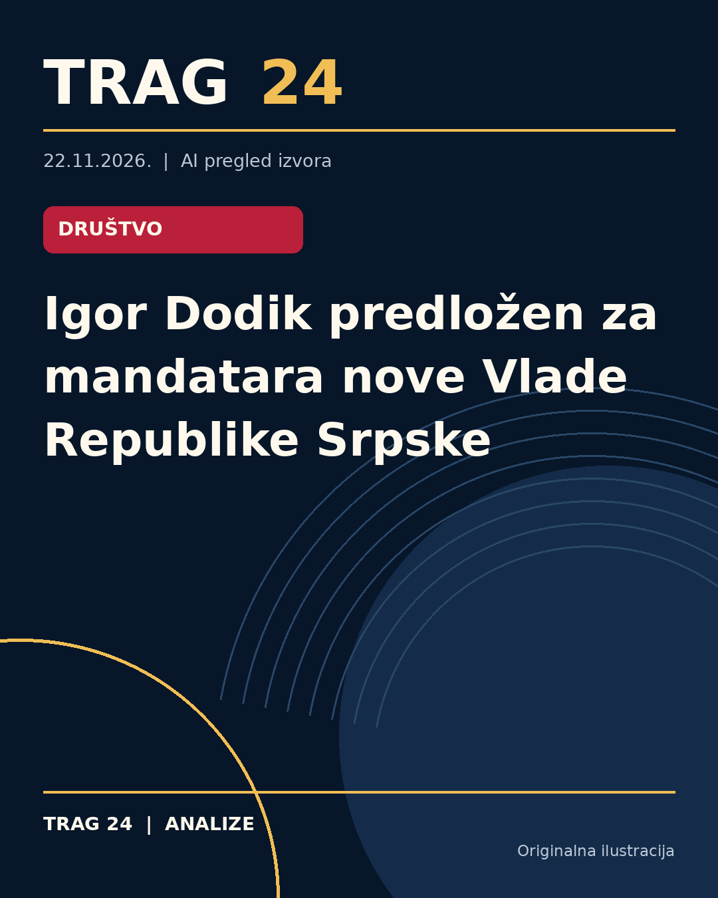

Igor Dodik predložen za mandatara nove Vlade Republike Srpske

ŠTA SE DOGODILO
Predsednik Republike Srpske Savo Minić nakon konsultacija s koalicionim partnerima predložio je Igora Dodika za mandatara za sastav nove Vlade RS. Igor Dodik, organizacioni sekretar SNSD-a i sin lidera te stranke Milorada Dodika, ima podršku veće grupe pobedničkih odbora SNSD-a, dok su unutar stranke zabeležene i nesuglasice u vezi sa njegovim imenovanjem.
HRONOLOGIJA
Savo Minić je najpre razgovarao s opozicionim partijama koje su, prema navodima, najavile da neće učestvovati u novoj vlasti. Nakon toga usledila su konsultacije s predstavnicima vladajućih koalicionih stranaka: SPS-a, Socijalističke partije, DEMOS-a, NDP-a, DNS-a, NPS-a i Ujedinjene Srpske. Nakon ovih razgovora, Minić je zvanično objavio da je Igor Dodik predlog za mandatara nove Vlade Republike Srpske.
ŠTA NAVODE IZVORI
Kurir ističe da Igor Dodik uživa podršku mlađih kadrova SNSD-a s pobedničkih opštinskih odbora, kao i da postoji rivalstvo unutar stranke u pogledu kandidata za premijera. Nova.rs precizira pravni okvir predlaganja mandatara prema Ustavu Republike Srpske i navodi tačan raspored konsultacija. Blic donosi podatak da je odluka o Igorovom imenovanju doneta unutar vrha SNSD, uz tvrdnje sarajevskih portala o nameri lidera SNSD-a da zadrži uticaj preko članova porodice, ali i o postojanju nesuglasica u samoj stranci.
ŠTA JE POTVRĐENO
Potvrđeno je da je Igor Dodik predložen za mandatara za sastav nove Vlade Republike Srpske. Predsednik Republike Srpske Savo Minić zvanično je saopštio ovu odluku nakon konsultacija s koalicionim partnerima. Takođe je potvrđeno da opozicione partije nisu zainteresovane za učestvovanje u novoj vlasti, a da je u SNSD-u bilo predloga i za drugog kandidata, Zorana Stevanovića.
ŠTA NIJE POTVRĐENO
Nije zvanično potvrđeno da li će Narodna skupština Republike Srpske podržati predlog Igora Dodika za mandatara. Takođe nisu poznati detalji o tome kako će se rešavati navodne nesuglasice unutar SNSD u vezi sa ovim imenovanjem. Nisu potvrđene konkretne reakcije drugih političkih aktera u RS ali ni javne izjave Milorada ili Igora Dodika u vezi sa preuzimanjem funkcije.
ŠTA OSTАJE OTVORENO: Ostaje otvoreno da li će Igor Dodik formalno biti izabran na mesto premijera nakon što Narodna skupština razmotri njegovu kandidaturu. Takođe nije jasno kako će biti rešene unutarstranačke razlike oko kandidature u SNSD, kao ni na koji način će ovo imenovanje uticati na političku dinamiku u Republici Srpskoj i regionalnoj politici.
Izvori
- https://www.kurir.rs/region/bosna-i-hercegovina/10169328/igor-dodik-je-novi-premijer-republike-srpske
- https://nova.rs/vesti/svet/igor-dodik-imenovan-za-mandatara-za-sastav-nove-vlade-republike-srpske/
- https://www.blic.rs/vesti/politika/igor-dodik-novi-premijer-republike-srpske-doneta-odluka/v94gm8r
Ova analiza je pripremljena uz pomoć veštačke inteligencije na osnovu javno dostupnih izvora. Navodi izvora nisu nužno nezavisno potvrđeni.